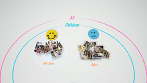

Organizando fotos
Agrupando fotos
Você pode selecionar eventos e, depois, agrupar fotos nesses eventos selecionados utilizando uma das opções descritas abaixo. Selecione os eventos que contêm as fotos que você deseja agrupar, pressione o botão  e, depois, selecione
e, depois, selecione  (Agrupar). Se você quiser reduzir o número de fotos agrupadas, selecione um grupo ou grupos que contêm as fotos que deseja agrupar e, depois, utilize outra opção em (Agrupar) para agrupar as fotos.
(Agrupar). Se você quiser reduzir o número de fotos agrupadas, selecione um grupo ou grupos que contêm as fotos que deseja agrupar e, depois, utilize outra opção em (Agrupar) para agrupar as fotos.
| Data / Hora | Agrupa pela data e pela hora em que as fotos foram tiradas. |
|---|---|
| Quantidade de pessoas | Agrupa pela quantidade de pessoas nas fotos. |
| Faixa etária | Agrupa de acordo com a idade relativa das pessoas nas fotos. |
| Expressão | Agrupa pelas expressões faciais das pessoas nas fotos. |
| Cor | Agrupa pelas cores que aparecem nas fotos. |
| Tipo de câmera | Agrupa pelo modelo da câmera utilizada para tirar as fotos. |
| Jogo | Agrupa pelo título do jogo. |
| Álbum | Agrupa pelos álbuns criados em  (Foto) na tela XMB™. (Foto) na tela XMB™. |
Dicas
- Com [Selecionar tudo], todas as fotos na [Área de biblioteca] serão agrupadas de acordo com a opção selecionada.
- O agrupamento é baseado na análise das fotos e em alguns casos, o resultado pode não ser o esperado.
- Você pode criar uma lista de reprodução das fotos agrupadas.
Exemplos de fotos agrupadas: Fotos de crianças sorrindo
1. |
Agrupe as fotos selecionando |
|---|---|
2. |
Selecione o grupo identificado como [Crianças] e, depois, pressione o botão |
3. |
Selecione  |
Exemplos de fotos agrupadas: Fotos que mostram o céu azul
1. |
Agrupe as fotos selecionando |
|---|---|
2. |
Selecione o grupo identificado como [Paisagens/outro] e, depois, pressione o botão |
3. |
Selecione |
Excluindo fotos
Para excluir uma foto ou um álbum, selecione a foto ou o álbum, pressione o botão e, depois, selecione  (Excluir).
(Excluir).
Dica
Se você excluir as fotos na [Área de biblioteca], as fotos também serão excluídas do armazenamento do sistema PS3™.